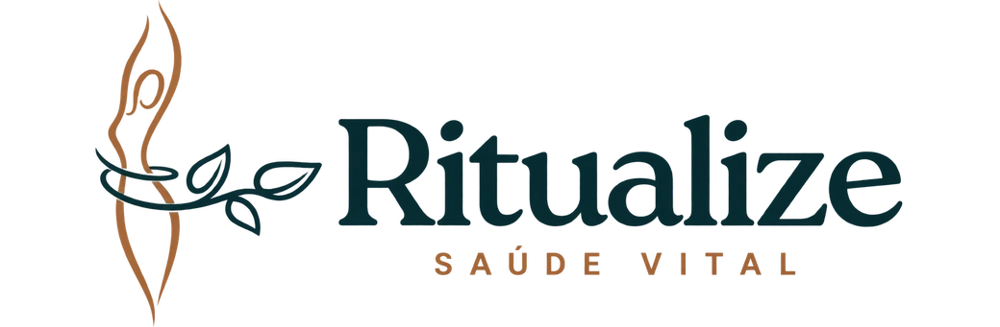

Escolhas que cabem na sua vida.
Alimentação, movimento e autocuidado: olhe para os seus hábitos e encontre pequenos passos possíveis no dia a dia.

EDIÇÃO NOVEMBRO / DEZEMBRO 2026PEQUENAS ESCOLHAS. TODOS OS DIAS.
Uma comunidade de mulheres para transformar hábitos e construir uma rotina com mais leveza, cuidado e constância. Com apoio, um dia de cada vez.
Pré-venda · R$ 99 · 7 dias de garantia
Acompanhamento até 24/12Grupo disponível até 24/01
NOSSO PRÓXIMO ENCONTRO
A pré-venda abre em 14 de novembro.
O início da turma será anunciado no calendário oficial.
01 / A EXPERIÊNCIA
A mudança não precisa começar com uma vida nova. Pode começar com uma escolha possível hoje — e com apoio para continuar amanhã.
Alimentação, movimento e autocuidado: olhe para os seus hábitos e encontre pequenos passos possíveis no dia a dia.
Organize seus próximos passos com as orientações da mentora. O objetivo é construir hábitos que façam sentido para você.
Uma comunidade no WhatsApp para trocar experiências, compartilhar a caminhada e encontrar incentivo para continuar.
Acompanhamento em grupo até 24 de dezembro. Depois, a comunidade continua disponível até 24 de janeiro de 2027.
QUEM CRIOU O RITUALIZE
Pequenas escolhas. Uma nova forma de viver.EXPERIÊNCIAS REAIS
02 / O SEU PRÓXIMO PASSO
Seu espaço para aprender, trocar experiências e dar um novo ritmo à sua rotina, com outras mulheres e com o apoio da Aline Lino.
Cada mulher tem sua própria caminhada. Os resultados variam de pessoa para pessoa.
R$99,00
Pix ou parcelamento no cartão pela Kiwify.
Parcelas, juros e total informados no checkout.
As inscrições ainda não foram abertas.
Solicite o reembolso integral em até 7 dias corridos após a compra.
03 / ÚLTIMAS DÚVIDAS
Após a aprovação do pagamento na Kiwify, nossa equipe envia as orientações para entrar na comunidade do WhatsApp. Todas as participantes desta edição entram na mesma comunidade.
Sim, enquanto as inscrições estiverem abertas. Você participa da mesma turma, com acompanhamento até 24/12/2026. O período não recomeça a cada compra.
A proposta desta edição olha para a rotina como um todo: alimentação, movimento, autocuidado e constância. O foco é construir hábitos possíveis, com apoio em grupo e respeito ao seu ritmo.
Você acompanha as conversas nos momentos em que puder. O acompanhamento termina em 24/12/2026, e o grupo continua disponível até 24/01/2027.
Esta edição tem formato educativo e acompanhamento em grupo. Não substitui consulta ou tratamento individual com profissionais de saúde.
A compra é finalizada no checkout da Kiwify, por Pix ou cartão. As condições de parcelamento são exibidas antes de concluir o pagamento.
Se mudar de ideia, você pode solicitar o reembolso integral em até 7 dias corridos após a compra, pelo suporte da oferta ou pela Kiwify.
Ritualize o cuidado.
Comece pela sua rotina.